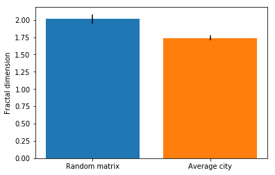
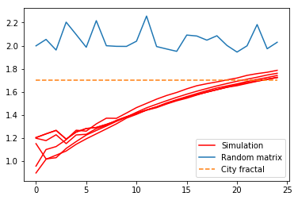
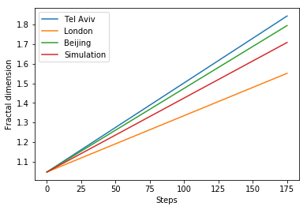

The fractal dimension is a measure for the degree of complexity. It is the ratio of the change in detail in a pattern to the change in scale. It can be estimated using the following equation:
| lgBt=c+Dlgr |
In this equation D is the fractal dimension, c a constant and Bt is the total number of occupied cells within an area with a radius r. To determine the fractal dimension of a city, the total urbanized area within a given radius of the centre is calculated for several radii of increasing length. Then, regression analysis can be applied. The slope of the fitted linear line plot is equal to the fractal dimension.
The fractal dimensions are a common method of analysis, as they are known to be an important characteristic of city structures. On average, based on cities around the world, values around 1.7 were found (Batty & Longley (2012), Alfasi & Portugali (2004)).
When analysing our generated cities, we calculated an average fractal dimension of 1.74 (based on 20 simulations). In comparison, when completely random 'cities' are generated, this results in an average fractal dimension of 2.02.

As can be seen, comparing the generated cities to randomly generated matrices leads to a significant difference. The similarity between the world-wide determined average fractal dimension and our generated cities, as well as the small standard deviation of the fractal dimension calculation, suggests a certain validity of our model.
To further investigate this, we examined the fractal growth over time of our model.

This suggests that although starting configurations may differ in fractal dimension (due to the larger stochastic impact during the first period of the simulation), after 25 simulation steps the fractal dimensions are quite similar and close to the worldwide average fractal dimension. In comparison, randomly generated matrices consistently have a fractal dimension of around 2. It should be noted that this figure consists of a random matrix at each step, and do not evolve during the steps.
Additionally, we can compare the fractal growth of our model to the fractal growth of existing cities. We compared data of Tel Aviv (Benguigui et al., 2000), Beijing (Chen & Wang, 2013) and London (Chen, 2016). Since these datasets varied in time period and interval, we determined the average growth per year of each city. This was compared to the fractal growth of our own model.

In this comparison, a simulation step in our model represents seven years. As can be seen, the fractal growth of our model compared to the growth of actual cities is rather similar. This also implies validity of the fractal dimension of our model.
Alfasi, N. & Portugali, J. Planning just-in-time versus planning just-in-case. Cities 21, 29–39 (2004).
Batty, M. & Longley, P. Fractal cities: a geometry of form and function. (Academic Press, 1994).
Benguigui, L., Czamanski, D., Marinov, M., & Portugali, Y. (2000). When and where is a city fractal?. Environment and planning B: Planning and design, 27(4), 507-519.
Chen, Y., & Wang, J. (2013). Multifractal characterization of urban form and growth: the case of Beijing. Environment and Planning B: Planning and Design, 40(5), 884-904.
Chen, Y. (2016). Logistic Models of Fractal Dimension Growth for Spatio-Temporal Dynamics of Urban Morphology. arXiv preprint arXiv:1606.03538.